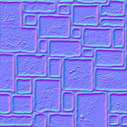
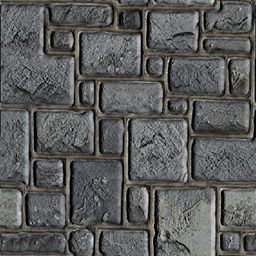
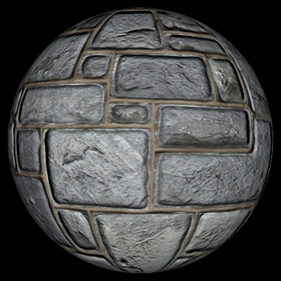
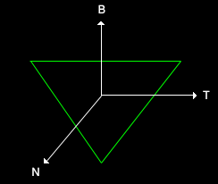
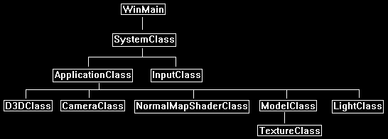
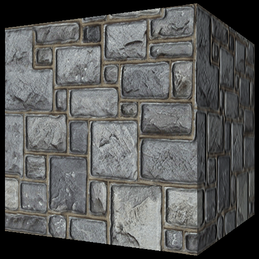

This tutorial will cover how to perform normal mapping in DirectX 11 using HLSL and C++.
The code in this tutorial is based on the code in the previous tutorials.
Normal mapping is a form of bump mapping that is used to produce a 3D effect using just two 2D textures.
In normal mapping we use a special texture called a normal map which is essentially a look up table for surface normals.
Each pixel in the normal map indicates the light direction for the corresponding pixel on the texture color map.
For example, take the following color map:

A normal map for the above texture would look like the following:

Using the normal map with the current light direction for each pixel would then produce the following normal mapped texture:

And if we apply that texture to something like a flat surface sphere, it will now appear to have a 3D surface instead of a flat one:

As you can see the effect is very realistic and the cost of producing it using normal mapping is far less expensive than rendering a high polygon surface to get the same result.
To create a normal map, you usually need someone to produce a 3D model of the surface and then use a tool to convert that 3D model into a normal map.
There are also certain tools that will work with 2D textures to produce a somewhat decent normal map.
The tools that create normal maps take the x, y, z coordinates and translate them to red, green, blue pixels with the intensity of each color indicating the angle of the normal they represent.
The normal of our polygon surface is still calculated the same way as before.
However, the two other normals we need to calculate require the vertex and texture coordinates for that polygon surface.
These two normals are called the tangent and binormal.
The diagram below shows the direction of each normal:

The normal is still pointing straight out towards the viewer.
The tangent and binormal however run across the surface of the polygon with the tangent going along the x-axis and the binormal going along the y-axis.
These two normals then directly translate to the tu and tv texture coordinates of the normal map with the texture U coordinate mapping to the tangent and the texture V coordinate mapping to the binormal.
We will need to do some precalculation to determine the binormal and tangent vectors.
You can do these calculations inside the shader, but it is fairly expensive with all the floating-point math involved.
In this tutorial I will use a function in my C++ code so you can see for yourself and understand the math used in calculating these two extra normal vectors.
Also, most 3D modeling tools will also export these normals as part of your model if they are selected.
Once we have precalculated the tangent and binormal we can use this equation to determine the bump normal at any pixel using the normal map:
bumpNormal = (normalMap.x * input.tangent) + (normalMap.y * input.binormal) + (normalMap.z * input.normal);
Once we have the normal for that pixel we can then calculate against the light direction and multiply by the color value of the pixel from the color texture to get our final result.
Framework
The frame work for this tutorial looks like the following:

We will start the tutorial by looking at the normal map HLSL shader code.
Normalmap.vs
////////////////////////////////////////////////////////////////////////////////
// Filename: normalmap.vs
////////////////////////////////////////////////////////////////////////////////
/////////////
// GLOBALS //
/////////////
cbuffer MatrixBuffer
{
matrix worldMatrix;
matrix viewMatrix;
matrix projectionMatrix;
};
Both the VertexInputType and PixelInputType now have a tangent and binormal vector for normal map calculations.
//////////////
// TYPEDEFS //
//////////////
struct VertexInputType
{
float4 position : POSITION;
float2 tex : TEXCOORD0;
float3 normal : NORMAL;
float3 tangent : TANGENT;
float3 binormal : BINORMAL;
};
struct PixelInputType
{
float4 position : SV_POSITION;
float2 tex : TEXCOORD0;
float3 normal : NORMAL;
float3 tangent : TANGENT;
float3 binormal : BINORMAL;
};
////////////////////////////////////////////////////////////////////////////////
// Vertex Shader
////////////////////////////////////////////////////////////////////////////////
PixelInputType NormalMapVertexShader(VertexInputType input)
{
PixelInputType output;
// Change the position vector to be 4 units for proper matrix calculations.
input.position.w = 1.0f;
// Calculate the position of the vertex against the world, view, and projection matrices.
output.position = mul(input.position, worldMatrix);
output.position = mul(output.position, viewMatrix);
output.position = mul(output.position, projectionMatrix);
// Store the texture coordinates for the pixel shader.
output.tex = input.tex;
// Calculate the normal vector against the world matrix only and then normalize the final value.
output.normal = mul(input.normal, (float3x3)worldMatrix);
output.normal = normalize(output.normal);
Both the input tangent vector and binormal vector are calculated against the world matrix and then normalized the same way the input normal vector is.
// Calculate the tangent vector against the world matrix only and then normalize the final value.
output.tangent = mul(input.tangent, (float3x3)worldMatrix);
output.tangent = normalize(output.tangent);
// Calculate the binormal vector against the world matrix only and then normalize the final value.
output.binormal = mul(input.binormal, (float3x3)worldMatrix);
output.binormal = normalize(output.binormal);
return output;
}
Normalmap.ps
////////////////////////////////////////////////////////////////////////////////
// Filename: normalmap.ps
////////////////////////////////////////////////////////////////////////////////
/////////////
// GLOBALS //
/////////////
The normal map shader requires two textures.
The first texture grants access to the color texture.
The second texture grants access to the normal map.
And just like most or our light shaders the direction and color of the light is provided in the constant buffer as input for lighting calculations.
Texture2D shaderTexture1 : register(t0);
Texture2D shaderTexture2 : register(t1);
SamplerState SampleType : register(s0);
cbuffer LightBuffer
{
float4 diffuseColor;
float3 lightDirection;
float padding;
};
//////////////
// TYPEDEFS //
//////////////
The PixelInputType is also updated in the pixel shader to have the tangent and binormal vectors.
struct PixelInputType
{
float4 position : SV_POSITION;
float2 tex : TEXCOORD0;
float3 normal : NORMAL;
float3 tangent : TANGENT;
float3 binormal : BINORMAL;
};
The pixel shader works as we described above with a couple additional lines of code.
First, we sample the pixel from the color texture and the normal map.
We then multiply the normal map value by two and then subtract one to move it into the -1.0 to +1.0 float range.
We have to do this because the sampled value that is presented to us in the 0.0 to +1.0 texture range which only covers half the range we need for bump map normal calculations.
After that we then calculate the bump normal which uses the equation we described earlier.
This bump normal is normalized and then used to determine the light intensity at this pixel by doing a dot product with the light direction.
Once we have the light intensity at this pixel the bump mapping is now done.
We use the light intensity with the light color and texture color to get the final pixel color.
////////////////////////////////////////////////////////////////////////////////
// Pixel Shader
////////////////////////////////////////////////////////////////////////////////
float4 NormalMapPixelShader(PixelInputType input) : SV_TARGET
{
float4 textureColor;
float4 bumpMap;
float3 bumpNormal;
float3 lightDir;
float lightIntensity;
float4 color;
// Sample the pixel color from the color texture at this location.
textureColor = shaderTexture1.Sample(SampleType, input.tex);
// Sample the pixel from the normal map.
bumpMap = shaderTexture2.Sample(SampleType, input.tex);
// Expand the range of the normal value from (0, +1) to (-1, +1).
bumpMap = (bumpMap * 2.0f) - 1.0f;
// Calculate the normal from the data in the normal map.
bumpNormal = (bumpMap.x * input.tangent) + (bumpMap.y * input.binormal) + (bumpMap.z * input.normal);
// Normalize the resulting bump normal.
bumpNormal = normalize(bumpNormal);
// Invert the light direction for calculations.
lightDir = -lightDirection;
// Calculate the amount of light on this pixel based on the normal map value.
lightIntensity = saturate(dot(bumpNormal, lightDir));
// Determine the final amount of diffuse color based on the diffuse color combined with the light intensity.
color = saturate(diffuseColor * lightIntensity);
// Combine the final light color with the texture color.
color = color * textureColor;
return color;
}
Normalmapshaderclass.h
The NormalMapShader is similar to the lighting shaders in the previous tutorials with the addition of extra variables to handle normal mapping.
////////////////////////////////////////////////////////////////////////////////
// Filename: normalmapshaderclass.h
////////////////////////////////////////////////////////////////////////////////
#ifndef _NORMALMAPSHADERCLASS_H_
#define _NORMALMAPSHADERCLASS_H_
//////////////
// INCLUDES //
//////////////
#include <d3d11.h>
#include <d3dcompiler.h>
#include <directxmath.h>
#include <fstream>
using namespace DirectX;
using namespace std;
////////////////////////////////////////////////////////////////////////////////
// Class name: NormalMapShaderClass
////////////////////////////////////////////////////////////////////////////////
class NormalMapShaderClass
{
private:
struct MatrixBufferType
{
XMMATRIX world;
XMMATRIX view;
XMMATRIX projection;
};
We will need a LightBufferType for the light direction and light color.
struct LightBufferType
{
XMFLOAT4 diffuseColor;
XMFLOAT3 lightDirection;
float padding;
};
public:
NormalMapShaderClass();
NormalMapShaderClass(const NormalMapShaderClass&);
~NormalMapShaderClass();
bool Initialize(ID3D11Device*, HWND);
void Shutdown();
bool Render(ID3D11DeviceContext*, int, XMMATRIX, XMMATRIX, XMMATRIX, ID3D11ShaderResourceView*, ID3D11ShaderResourceView*, XMFLOAT3, XMFLOAT4);
private:
bool InitializeShader(ID3D11Device*, HWND, WCHAR*, WCHAR*);
void ShutdownShader();
void OutputShaderErrorMessage(ID3D10Blob*, HWND, WCHAR*);
bool SetShaderParameters(ID3D11DeviceContext*, XMMATRIX, XMMATRIX, XMMATRIX, ID3D11ShaderResourceView*, ID3D11ShaderResourceView*, XMFLOAT3, XMFLOAT4);
void RenderShader(ID3D11DeviceContext*, int);
private:
ID3D11VertexShader* m_vertexShader;
ID3D11PixelShader* m_pixelShader;
ID3D11InputLayout* m_layout;
ID3D11Buffer* m_matrixBuffer;
ID3D11SamplerState* m_sampleState;
The normal map shader will require a constant buffer to interface with the light direction and light color.
ID3D11Buffer* m_lightBuffer;
};
#endif
Normalmapshaderclass.cpp
////////////////////////////////////////////////////////////////////////////////
// Filename: normalmapshaderclass.cpp
////////////////////////////////////////////////////////////////////////////////
#include "normalmapshaderclass.h"
NormalMapShaderClass::NormalMapShaderClass()
{
m_vertexShader = 0;
m_pixelShader = 0;
m_layout = 0;
m_matrixBuffer = 0;
m_sampleState = 0;
m_lightBuffer = 0;
}
NormalMapShaderClass::NormalMapShaderClass(const NormalMapShaderClass& other)
{
}
NormalMapShaderClass::~NormalMapShaderClass()
{
}
bool NormalMapShaderClass::Initialize(ID3D11Device* device, HWND hwnd)
{
bool result;
wchar_t vsFilename[128];
wchar_t psFilename[128];
int error;
The Initialize function will call the shader to load the normal map HLSL files.
// Set the filename of the vertex shader.
error = wcscpy_s(vsFilename, 128, L"../Engine/normalmap.vs");
if(error != 0)
{
return false;
}
// Set the filename of the pixel shader.
error = wcscpy_s(psFilename, 128, L"../Engine/normalmap.ps");
if(error != 0)
{
return false;
}
// Initialize the vertex and pixel shaders.
result = InitializeShader(device, hwnd, vsFilename, psFilename);
if(!result)
{
return false;
}
return true;
}
void NormalMapShaderClass::Shutdown()
{
// Shutdown the vertex and pixel shaders as well as the related objects.
ShutdownShader();
return;
}
The Render function will require the matrices, the color and normal texture, and the light direction and light color as inputs.
bool NormalMapShaderClass::Render(ID3D11DeviceContext* deviceContext, int indexCount, XMMATRIX worldMatrix, XMMATRIX viewMatrix, XMMATRIX projectionMatrix,
ID3D11ShaderResourceView* texture1, ID3D11ShaderResourceView* texture2, XMFLOAT3 lightDirection, XMFLOAT4 diffuseColor)
{
bool result;
// Set the shader parameters that it will use for rendering.
result = SetShaderParameters(deviceContext, worldMatrix, viewMatrix, projectionMatrix, texture1, texture2, lightDirection, diffuseColor);
if(!result)
{
return false;
}
// Now render the prepared buffers with the shader.
RenderShader(deviceContext, indexCount);
return true;
}
bool NormalMapShaderClass::InitializeShader(ID3D11Device* device, HWND hwnd, WCHAR* vsFilename, WCHAR* psFilename)
{
HRESULT result;
ID3D10Blob* errorMessage;
ID3D10Blob* vertexShaderBuffer;
ID3D10Blob* pixelShaderBuffer;
The polygon layout is now set to five elements to accommodate the tangent and binormal.
D3D11_INPUT_ELEMENT_DESC polygonLayout[5];
unsigned int numElements;
D3D11_BUFFER_DESC matrixBufferDesc;
D3D11_SAMPLER_DESC samplerDesc;
D3D11_BUFFER_DESC lightBufferDesc;
// Initialize the pointers this function will use to null.
errorMessage = 0;
vertexShaderBuffer = 0;
pixelShaderBuffer = 0;
The normal map vertex shader is loaded here.
// Compile the vertex shader code.
result = D3DCompileFromFile(vsFilename, NULL, NULL, "NormalMapVertexShader", "vs_5_0", D3D10_SHADER_ENABLE_STRICTNESS, 0,
&vertexShaderBuffer, &errorMessage);
if(FAILED(result))
{
// If the shader failed to compile it should have writen something to the error message.
if(errorMessage)
{
OutputShaderErrorMessage(errorMessage, hwnd, vsFilename);
}
// If there was nothing in the error message then it simply could not find the shader file itself.
else
{
MessageBox(hwnd, vsFilename, L"Missing Shader File", MB_OK);
}
return false;
}
The normal map pixel shader is loaded here.
// Compile the pixel shader code.
result = D3DCompileFromFile(psFilename, NULL, NULL, "NormalMapPixelShader", "ps_5_0", D3D10_SHADER_ENABLE_STRICTNESS, 0,
&pixelShaderBuffer, &errorMessage);
if(FAILED(result))
{
// If the shader failed to compile it should have writen something to the error message.
if(errorMessage)
{
OutputShaderErrorMessage(errorMessage, hwnd, psFilename);
}
// If there was nothing in the error message then it simply could not find the file itself.
else
{
MessageBox(hwnd, psFilename, L"Missing Shader File", MB_OK);
}
return false;
}
// Create the vertex shader from the buffer.
result = device->CreateVertexShader(vertexShaderBuffer->GetBufferPointer(), vertexShaderBuffer->GetBufferSize(), NULL, &m_vertexShader);
if(FAILED(result))
{
return false;
}
// Create the pixel shader from the buffer.
result = device->CreatePixelShader(pixelShaderBuffer->GetBufferPointer(), pixelShaderBuffer->GetBufferSize(), NULL, &m_pixelShader);
if(FAILED(result))
{
return false;
}
// Create the vertex input layout description.
polygonLayout[0].SemanticName = "POSITION";
polygonLayout[0].SemanticIndex = 0;
polygonLayout[0].Format = DXGI_FORMAT_R32G32B32_FLOAT;
polygonLayout[0].InputSlot = 0;
polygonLayout[0].AlignedByteOffset = 0;
polygonLayout[0].InputSlotClass = D3D11_INPUT_PER_VERTEX_DATA;
polygonLayout[0].InstanceDataStepRate = 0;
polygonLayout[1].SemanticName = "TEXCOORD";
polygonLayout[1].SemanticIndex = 0;
polygonLayout[1].Format = DXGI_FORMAT_R32G32_FLOAT;
polygonLayout[1].InputSlot = 0;
polygonLayout[1].AlignedByteOffset = D3D11_APPEND_ALIGNED_ELEMENT;
polygonLayout[1].InputSlotClass = D3D11_INPUT_PER_VERTEX_DATA;
polygonLayout[1].InstanceDataStepRate = 0;
polygonLayout[2].SemanticName = "NORMAL";
polygonLayout[2].SemanticIndex = 0;
polygonLayout[2].Format = DXGI_FORMAT_R32G32B32_FLOAT;
polygonLayout[2].InputSlot = 0;
polygonLayout[2].AlignedByteOffset = D3D11_APPEND_ALIGNED_ELEMENT;
polygonLayout[2].InputSlotClass = D3D11_INPUT_PER_VERTEX_DATA;
polygonLayout[2].InstanceDataStepRate = 0;
The layout now includes a tangent and binormal element which are setup the same as the normal element with the exception of the semantic name.
polygonLayout[3].SemanticName = "TANGENT";
polygonLayout[3].SemanticIndex = 0;
polygonLayout[3].Format = DXGI_FORMAT_R32G32B32_FLOAT;
polygonLayout[3].InputSlot = 0;
polygonLayout[3].AlignedByteOffset = D3D11_APPEND_ALIGNED_ELEMENT;
polygonLayout[3].InputSlotClass = D3D11_INPUT_PER_VERTEX_DATA;
polygonLayout[3].InstanceDataStepRate = 0;
polygonLayout[4].SemanticName = "BINORMAL";
polygonLayout[4].SemanticIndex = 0;
polygonLayout[4].Format = DXGI_FORMAT_R32G32B32_FLOAT;
polygonLayout[4].InputSlot = 0;
polygonLayout[4].AlignedByteOffset = D3D11_APPEND_ALIGNED_ELEMENT;
polygonLayout[4].InputSlotClass = D3D11_INPUT_PER_VERTEX_DATA;
polygonLayout[4].InstanceDataStepRate = 0;
// Get a count of the elements in the layout.
numElements = sizeof(polygonLayout) / sizeof(polygonLayout[0]);
// Create the vertex input layout.
result = device->CreateInputLayout(polygonLayout, numElements, vertexShaderBuffer->GetBufferPointer(),
vertexShaderBuffer->GetBufferSize(), &m_layout);
if(FAILED(result))
{
return false;
}
// Release the vertex shader buffer and pixel shader buffer since they are no longer needed.
vertexShaderBuffer->Release();
vertexShaderBuffer = 0;
pixelShaderBuffer->Release();
pixelShaderBuffer = 0;
// Setup the description of the dynamic matrix constant buffer that is in the vertex shader.
matrixBufferDesc.Usage = D3D11_USAGE_DYNAMIC;
matrixBufferDesc.ByteWidth = sizeof(MatrixBufferType);
matrixBufferDesc.BindFlags = D3D11_BIND_CONSTANT_BUFFER;
matrixBufferDesc.CPUAccessFlags = D3D11_CPU_ACCESS_WRITE;
matrixBufferDesc.MiscFlags = 0;
matrixBufferDesc.StructureByteStride = 0;
// Create the constant buffer pointer so we can access the vertex shader constant buffer from within this class.
result = device->CreateBuffer(&matrixBufferDesc, NULL, &m_matrixBuffer);
if(FAILED(result))
{
return false;
}
// Create a texture sampler state description.
samplerDesc.Filter = D3D11_FILTER_MIN_MAG_MIP_LINEAR;
samplerDesc.AddressU = D3D11_TEXTURE_ADDRESS_WRAP;
samplerDesc.AddressV = D3D11_TEXTURE_ADDRESS_WRAP;
samplerDesc.AddressW = D3D11_TEXTURE_ADDRESS_WRAP;
samplerDesc.MipLODBias = 0.0f;
samplerDesc.MaxAnisotropy = 1;
samplerDesc.ComparisonFunc = D3D11_COMPARISON_ALWAYS;
samplerDesc.BorderColor[0] = 0;
samplerDesc.BorderColor[1] = 0;
samplerDesc.BorderColor[2] = 0;
samplerDesc.BorderColor[3] = 0;
samplerDesc.MinLOD = 0;
samplerDesc.MaxLOD = D3D11_FLOAT32_MAX;
// Create the texture sampler state.
result = device->CreateSamplerState(&samplerDesc, &m_sampleState);
if(FAILED(result))
{
return false;
}
The light constant buffer is setup here.
// Setup the description of the light dynamic constant buffer that is in the pixel shader.
lightBufferDesc.Usage = D3D11_USAGE_DYNAMIC;
lightBufferDesc.ByteWidth = sizeof(LightBufferType);
lightBufferDesc.BindFlags = D3D11_BIND_CONSTANT_BUFFER;
lightBufferDesc.CPUAccessFlags = D3D11_CPU_ACCESS_WRITE;
lightBufferDesc.MiscFlags = 0;
lightBufferDesc.StructureByteStride = 0;
// Create the constant buffer pointer so we can access the vertex shader constant buffer from within this class.
result = device->CreateBuffer(&lightBufferDesc, NULL, &m_lightBuffer);
if(FAILED(result))
{
return false;
}
return true;
}
void NormalMapShaderClass::ShutdownShader()
{
// Release the light constant buffer.
if(m_lightBuffer)
{
m_lightBuffer->Release();
m_lightBuffer = 0;
}
// Release the sampler state.
if(m_sampleState)
{
m_sampleState->Release();
m_sampleState = 0;
}
// Release the matrix constant buffer.
if(m_matrixBuffer)
{
m_matrixBuffer->Release();
m_matrixBuffer = 0;
}
// Release the layout.
if(m_layout)
{
m_layout->Release();
m_layout = 0;
}
// Release the pixel shader.
if(m_pixelShader)
{
m_pixelShader->Release();
m_pixelShader = 0;
}
// Release the vertex shader.
if(m_vertexShader)
{
m_vertexShader->Release();
m_vertexShader = 0;
}
return;
}
void NormalMapShaderClass::OutputShaderErrorMessage(ID3D10Blob* errorMessage, HWND hwnd, WCHAR* shaderFilename)
{
char* compileErrors;
unsigned long long bufferSize, i;
ofstream fout;
// Get a pointer to the error message text buffer.
compileErrors = (char*)(errorMessage->GetBufferPointer());
// Get the length of the message.
bufferSize = errorMessage->GetBufferSize();
// Open a file to write the error message to.
fout.open("shader-error.txt");
// Write out the error message.
for(i=0; i<bufferSize; i++)
{
fout << compileErrors[i];
}
// Close the file.
fout.close();
// Release the error message.
errorMessage->Release();
errorMessage = 0;
// Pop a message up on the screen to notify the user to check the text file for compile errors.
MessageBox(hwnd, L"Error compiling shader. Check shader-error.txt for message.", shaderFilename, MB_OK);
return;
}
bool NormalMapShaderClass::SetShaderParameters(ID3D11DeviceContext* deviceContext, XMMATRIX worldMatrix, XMMATRIX viewMatrix, XMMATRIX projectionMatrix,
ID3D11ShaderResourceView* texture1, ID3D11ShaderResourceView* texture2, XMFLOAT3 lightDirection, XMFLOAT4 diffuseColor)
{
HRESULT result;
D3D11_MAPPED_SUBRESOURCE mappedResource;
MatrixBufferType* dataPtr;
unsigned int bufferNumber;
LightBufferType* dataPtr2;
// Transpose the matrices to prepare them for the shader.
worldMatrix = XMMatrixTranspose(worldMatrix);
viewMatrix = XMMatrixTranspose(viewMatrix);
projectionMatrix = XMMatrixTranspose(projectionMatrix);
// Lock the constant buffer so it can be written to.
result = deviceContext->Map(m_matrixBuffer, 0, D3D11_MAP_WRITE_DISCARD, 0, &mappedResource);
if(FAILED(result))
{
return false;
}
// Get a pointer to the data in the constant buffer.
dataPtr = (MatrixBufferType*)mappedResource.pData;
// Copy the matrices into the constant buffer.
dataPtr->world = worldMatrix;
dataPtr->view = viewMatrix;
dataPtr->projection = projectionMatrix;
// Unlock the constant buffer.
deviceContext->Unmap(m_matrixBuffer, 0);
// Set the position of the constant buffer in the vertex shader.
bufferNumber = 0;
// Finally set the constant buffer in the vertex shader with the updated values.
deviceContext->VSSetConstantBuffers(bufferNumber, 1, &m_matrixBuffer);
Here the color texture and normal texture are set in pixel shader.
// Set shader texture resources in the pixel shader.
deviceContext->PSSetShaderResources(0, 1, &texture1);
deviceContext->PSSetShaderResources(1, 1, &texture2);
The light buffer in the pixel shader is then set with the diffuse light color and light direction.
// Lock the light constant buffer so it can be written to.
result = deviceContext->Map(m_lightBuffer, 0, D3D11_MAP_WRITE_DISCARD, 0, &mappedResource);
if(FAILED(result))
{
return false;
}
// Get a pointer to the data in the constant buffer.
dataPtr2 = (LightBufferType*)mappedResource.pData;
// Copy the lighting variables into the constant buffer.
dataPtr2->diffuseColor = diffuseColor;
dataPtr2->lightDirection = lightDirection;
dataPtr2->padding = 0.0f;
// Unlock the constant buffer.
deviceContext->Unmap(m_lightBuffer, 0);
// Set the position of the light constant buffer in the pixel shader.
bufferNumber = 0;
// Finally set the light constant buffer in the pixel shader with the updated values.
deviceContext->PSSetConstantBuffers(bufferNumber, 1, &m_lightBuffer);
return true;
}
void NormalMapShaderClass::RenderShader(ID3D11DeviceContext* deviceContext, int indexCount)
{
// Set the vertex input layout.
deviceContext->IASetInputLayout(m_layout);
// Set the vertex and pixel shaders that will be used to render this triangle.
deviceContext->VSSetShader(m_vertexShader, NULL, 0);
deviceContext->PSSetShader(m_pixelShader, NULL, 0);
// Set the sampler state in the pixel shader.
deviceContext->PSSetSamplers(0, 1, &m_sampleState);
// Render the triangle.
deviceContext->DrawIndexed(indexCount, 0, 0);
return;
}
Modelclass.h
////////////////////////////////////////////////////////////////////////////////
// Filename: modelclass.h
////////////////////////////////////////////////////////////////////////////////
#ifndef _MODELCLASS_H_
#define _MODELCLASS_H_
//////////////
// INCLUDES //
//////////////
#include <d3d11.h>
#include <directxmath.h>
#include <fstream>
using namespace DirectX;
using namespace std;
///////////////////////
// MY CLASS INCLUDES //
///////////////////////
#include "textureclass.h"
////////////////////////////////////////////////////////////////////////////////
// Class name: ModelClass
////////////////////////////////////////////////////////////////////////////////
class ModelClass
{
private:
The VertexType structure has been changed to now have a tangent and binormal vector.
The ModelType structure has also been changed to have a corresponding tangent and binormal vector.
struct VertexType
{
XMFLOAT3 position;
XMFLOAT2 texture;
XMFLOAT3 normal;
XMFLOAT3 tangent;
XMFLOAT3 binormal;
};
struct ModelType
{
float x, y, z;
float tu, tv;
float nx, ny, nz;
float tx, ty, tz;
float bx, by, bz;
};
The following two structures will be used for calculating the tangent and binormal.
struct TempVertexType
{
float x, y, z;
float tu, tv;
float nx, ny, nz;
};
struct VectorType
{
float x, y, z;
};
public:
ModelClass();
ModelClass(const ModelClass&);
~ModelClass();
Note that Initialize and LoadTextures only take two texture file names for this tutorial.
bool Initialize(ID3D11Device*, ID3D11DeviceContext*, char*, char*, char*);
void Shutdown();
void Render(ID3D11DeviceContext*);
int GetIndexCount();
ID3D11ShaderResourceView* GetTexture(int);
private:
bool InitializeBuffers(ID3D11Device*);
void ShutdownBuffers();
void RenderBuffers(ID3D11DeviceContext*);
bool LoadTextures(ID3D11Device*, ID3D11DeviceContext*, char*, char*);
void ReleaseTextures();
bool LoadModel(char*);
void ReleaseModel();
We have two new functions for calculating the tangent and binormal vectors for the model.
void CalculateModelVectors();
void CalculateTangentBinormal(TempVertexType, TempVertexType, TempVertexType, VectorType&, VectorType&);
private:
ID3D11Buffer *m_vertexBuffer, *m_indexBuffer;
int m_vertexCount, m_indexCount;
TextureClass* m_Textures;
ModelType* m_model;
};
#endif
Modelclass.cpp
////////////////////////////////////////////////////////////////////////////////
// Filename: modelclass.cpp
////////////////////////////////////////////////////////////////////////////////
#include "modelclass.h"
ModelClass::ModelClass()
{
m_vertexBuffer = 0;
m_indexBuffer = 0;
m_Textures = 0;
m_model = 0;
}
ModelClass::ModelClass(const ModelClass& other)
{
}
ModelClass::~ModelClass()
{
}
bool ModelClass::Initialize(ID3D11Device* device, ID3D11DeviceContext* deviceContext, char* modelFilename, char* textureFilename1, char* textureFilename2)
{
bool result;
// Load in the model data.
result = LoadModel(modelFilename);
if(!result)
{
return false;
}
After the model data has been loaded, we now call the new CalculateModelVectors function to calculate the tangent and binormal and then store it in the model structure.
// Calculate the tangent and binormal vectors for the model.
CalculateModelVectors();
// Initialize the vertex and index buffers.
result = InitializeBuffers(device);
if(!result)
{
return false;
}
The model for this tutorial loads just two textures. One is the color texture, and the other is the normal map.
// Load the textures for this model.
result = LoadTextures(device, deviceContext, textureFilename1, textureFilename2);
if(!result)
{
return false;
}
return true;
}
void ModelClass::Shutdown()
{
// Release the model textures.
ReleaseTextures();
// Shutdown the vertex and index buffers.
ShutdownBuffers();
// Release the model data.
ReleaseModel();
return;
}
void ModelClass::Render(ID3D11DeviceContext* deviceContext)
{
// Put the vertex and index buffers on the graphics pipeline to prepare them for drawing.
RenderBuffers(deviceContext);
return;
}
int ModelClass::GetIndexCount()
{
return m_indexCount;
}
ID3D11ShaderResourceView* ModelClass::GetTexture(int index)
{
return m_Textures[index].GetTexture();
}
bool ModelClass::InitializeBuffers(ID3D11Device* device)
{
VertexType* vertices;
unsigned long* indices;
D3D11_BUFFER_DESC vertexBufferDesc, indexBufferDesc;
D3D11_SUBRESOURCE_DATA vertexData, indexData;
HRESULT result;
int i;
// Create the vertex array.
vertices = new VertexType[m_vertexCount];
// Create the index array.
indices = new unsigned long[m_indexCount];
The InitializeBuffers function has changed at this point where the vertex array is loaded with data from the ModelType array.
The ModelType array now has tangent and binormal values for the model so they need to be copied into the vertex array which will then be copied into the vertex buffer.
// Load the vertex array and index array with data.
for(i=0; i<m_vertexCount; i++)
{
vertices[i].position = XMFLOAT3(m_model[i].x, m_model[i].y, m_model[i].z);
vertices[i].texture = XMFLOAT2(m_model[i].tu, m_model[i].tv);
vertices[i].normal = XMFLOAT3(m_model[i].nx, m_model[i].ny, m_model[i].nz);
vertices[i].tangent = XMFLOAT3(m_model[i].tx, m_model[i].ty, m_model[i].tz);
vertices[i].binormal = XMFLOAT3(m_model[i].bx, m_model[i].by, m_model[i].bz);
indices[i] = i;
}
// Set up the description of the static vertex buffer.
vertexBufferDesc.Usage = D3D11_USAGE_DEFAULT;
vertexBufferDesc.ByteWidth = sizeof(VertexType) * m_vertexCount;
vertexBufferDesc.BindFlags = D3D11_BIND_VERTEX_BUFFER;
vertexBufferDesc.CPUAccessFlags = 0;
vertexBufferDesc.MiscFlags = 0;
vertexBufferDesc.StructureByteStride = 0;
// Give the subresource structure a pointer to the vertex data.
vertexData.pSysMem = vertices;
vertexData.SysMemPitch = 0;
vertexData.SysMemSlicePitch = 0;
// Now create the vertex buffer.
result = device->CreateBuffer(&vertexBufferDesc, &vertexData, &m_vertexBuffer);
if(FAILED(result))
{
return false;
}
// Set up the description of the static index buffer.
indexBufferDesc.Usage = D3D11_USAGE_DEFAULT;
indexBufferDesc.ByteWidth = sizeof(unsigned long) * m_indexCount;
indexBufferDesc.BindFlags = D3D11_BIND_INDEX_BUFFER;
indexBufferDesc.CPUAccessFlags = 0;
indexBufferDesc.MiscFlags = 0;
indexBufferDesc.StructureByteStride = 0;
// Give the subresource structure a pointer to the index data.
indexData.pSysMem = indices;
indexData.SysMemPitch = 0;
indexData.SysMemSlicePitch = 0;
// Create the index buffer.
result = device->CreateBuffer(&indexBufferDesc, &indexData, &m_indexBuffer);
if(FAILED(result))
{
return false;
}
// Release the arrays now that the vertex and index buffers have been created and loaded.
delete [] vertices;
vertices = 0;
delete [] indices;
indices = 0;
return true;
}
void ModelClass::ShutdownBuffers()
{
// Release the index buffer.
if(m_indexBuffer)
{
m_indexBuffer->Release();
m_indexBuffer = 0;
}
// Release the vertex buffer.
if(m_vertexBuffer)
{
m_vertexBuffer->Release();
m_vertexBuffer = 0;
}
return;
}
void ModelClass::RenderBuffers(ID3D11DeviceContext* deviceContext)
{
unsigned int stride;
unsigned int offset;
// Set vertex buffer stride and offset.
stride = sizeof(VertexType);
offset = 0;
// Set the vertex buffer to active in the input assembler so it can be rendered.
deviceContext->IASetVertexBuffers(0, 1, &m_vertexBuffer, &stride, &offset);
// Set the index buffer to active in the input assembler so it can be rendered.
deviceContext->IASetIndexBuffer(m_indexBuffer, DXGI_FORMAT_R32_UINT, 0);
// Set the type of primitive that should be rendered from this vertex buffer, in this case triangles.
deviceContext->IASetPrimitiveTopology(D3D11_PRIMITIVE_TOPOLOGY_TRIANGLELIST);
return;
}
The LoadTextures and ReleaseTextures will now load and release our color texture and our normal map texture.
bool ModelClass::LoadTextures(ID3D11Device* device, ID3D11DeviceContext* deviceContext, char* filename1, char* filename2)
{
bool result;
// Create and initialize the texture object array.
m_Textures = new TextureClass[2];
result = m_Textures[0].Initialize(device, deviceContext, filename1);
if(!result)
{
return false;
}
result = m_Textures[1].Initialize(device, deviceContext, filename2);
if(!result)
{
return false;
}
return true;
}
void ModelClass::ReleaseTextures()
{
// Release the texture object array.
if(m_Textures)
{
m_Textures[0].Shutdown();
m_Textures[1].Shutdown();
delete [] m_Textures;
m_Textures = 0;
}
return;
}
Although our model format has changed to add a tangent and binormal, we will load models with the same original format as the other tutorials.
All we do in this tutorial is calculate the tangent and binormal after the model has been loaded, and then add it to the model manually.
So, the LoadModel function has stayed the same for this tutorial.
bool ModelClass::LoadModel(char* filename)
{
ifstream fin;
char input;
int i;
// Open the model file.
fin.open(filename);
// If it could not open the file then exit.
if(fin.fail())
{
return false;
}
// Read up to the value of vertex count.
fin.get(input);
while (input != ':')
{
fin.get(input);
}
// Read in the vertex count.
fin >> m_vertexCount;
// Set the number of indices to be the same as the vertex count.
m_indexCount = m_vertexCount;
// Create the model using the vertex count that was read in.
m_model = new ModelType[m_vertexCount];
// Read up to the beginning of the data.
fin.get(input);
while (input != ':')
{
fin.get(input);
}
fin.get(input);
fin.get(input);
// Read in the vertex data.
for(i=0; i<m_vertexCount; i++)
{
fin >> m_model[i].x >> m_model[i].y >> m_model[i].z;
fin >> m_model[i].tu >> m_model[i].tv;
fin >> m_model[i].nx >> m_model[i].ny >> m_model[i].nz;
}
// Close the model file.
fin.close();
return true;
}
void ModelClass::ReleaseModel()
{
if(m_model)
{
delete [] m_model;
m_model = 0;
}
return;
}
CalculateModelVectors generates the tangent and binormal for the model.
To start it calculates how many faces (triangles) are in the model.
Then for each of those triangles it gets the three vertices and uses that to calculate the tangent and binormal.
After calculating those two new normal vectors, it then saves them back into the model structure.
void ModelClass::CalculateModelVectors()
{
int faceCount, i, index;
TempVertexType vertex1, vertex2, vertex3;
VectorType tangent, binormal;
// Calculate the number of faces in the model.
faceCount = m_vertexCount / 3;
// Initialize the index to the model data.
index = 0;
// Go through all the faces and calculate the the tangent and binormal vectors.
for(i=0; i<faceCount; i++)
{
// Get the three vertices for this face from the model.
vertex1.x = m_model[index].x;
vertex1.y = m_model[index].y;
vertex1.z = m_model[index].z;
vertex1.tu = m_model[index].tu;
vertex1.tv = m_model[index].tv;
index++;
vertex2.x = m_model[index].x;
vertex2.y = m_model[index].y;
vertex2.z = m_model[index].z;
vertex2.tu = m_model[index].tu;
vertex2.tv = m_model[index].tv;
index++;
vertex3.x = m_model[index].x;
vertex3.y = m_model[index].y;
vertex3.z = m_model[index].z;
vertex3.tu = m_model[index].tu;
vertex3.tv = m_model[index].tv;
index++;
// Calculate the tangent and binormal of that face.
CalculateTangentBinormal(vertex1, vertex2, vertex3, tangent, binormal);
// Store the tangent and binormal for this face back in the model structure.
m_model[index-1].tx = tangent.x;
m_model[index-1].ty = tangent.y;
m_model[index-1].tz = tangent.z;
m_model[index-1].bx = binormal.x;
m_model[index-1].by = binormal.y;
m_model[index-1].bz = binormal.z;
m_model[index-2].tx = tangent.x;
m_model[index-2].ty = tangent.y;
m_model[index-2].tz = tangent.z;
m_model[index-2].bx = binormal.x;
m_model[index-2].by = binormal.y;
m_model[index-2].bz = binormal.z;
m_model[index-3].tx = tangent.x;
m_model[index-3].ty = tangent.y;
m_model[index-3].tz = tangent.z;
m_model[index-3].bx = binormal.x;
m_model[index-3].by = binormal.y;
m_model[index-3].bz = binormal.z;
}
return;
}
The CalculateTangentBinormal function takes in three vertices and then calculates and returns the tangent and binormal of those three vertices.
void ModelClass::CalculateTangentBinormal(TempVertexType vertex1, TempVertexType vertex2, TempVertexType vertex3, VectorType& tangent, VectorType& binormal)
{
float vector1[3], vector2[3];
float tuVector[2], tvVector[2];
float den;
float length;
// Calculate the two vectors for this face.
vector1[0] = vertex2.x - vertex1.x;
vector1[1] = vertex2.y - vertex1.y;
vector1[2] = vertex2.z - vertex1.z;
vector2[0] = vertex3.x - vertex1.x;
vector2[1] = vertex3.y - vertex1.y;
vector2[2] = vertex3.z - vertex1.z;
// Calculate the tu and tv texture space vectors.
tuVector[0] = vertex2.tu - vertex1.tu;
tvVector[0] = vertex2.tv - vertex1.tv;
tuVector[1] = vertex3.tu - vertex1.tu;
tvVector[1] = vertex3.tv - vertex1.tv;
// Calculate the denominator of the tangent/binormal equation.
den = 1.0f / (tuVector[0] * tvVector[1] - tuVector[1] * tvVector[0]);
// Calculate the cross products and multiply by the coefficient to get the tangent and binormal.
tangent.x = (tvVector[1] * vector1[0] - tvVector[0] * vector2[0]) * den;
tangent.y = (tvVector[1] * vector1[1] - tvVector[0] * vector2[1]) * den;
tangent.z = (tvVector[1] * vector1[2] - tvVector[0] * vector2[2]) * den;
binormal.x = (tuVector[0] * vector2[0] - tuVector[1] * vector1[0]) * den;
binormal.y = (tuVector[0] * vector2[1] - tuVector[1] * vector1[1]) * den;
binormal.z = (tuVector[0] * vector2[2] - tuVector[1] * vector1[2]) * den;
// Calculate the length of this normal.
length = sqrt((tangent.x * tangent.x) + (tangent.y * tangent.y) + (tangent.z * tangent.z));
// Normalize the normal and then store it
tangent.x = tangent.x / length;
tangent.y = tangent.y / length;
tangent.z = tangent.z / length;
// Calculate the length of this normal.
length = sqrt((binormal.x * binormal.x) + (binormal.y * binormal.y) + (binormal.z * binormal.z));
// Normalize the normal and then store it
binormal.x = binormal.x / length;
binormal.y = binormal.y / length;
binormal.z = binormal.z / length;
return;
}
Applicationclass.h
We have modified the ApplicationClass to accommodate normal mapping.
////////////////////////////////////////////////////////////////////////////////
// Filename: applicationclass.h
////////////////////////////////////////////////////////////////////////////////
#ifndef _APPLICATIONCLASS_H_
#define _APPLICATIONCLASS_H_
///////////////////////
// MY CLASS INCLUDES //
///////////////////////
#include "d3dclass.h"
#include "inputclass.h"
#include "cameraclass.h"
#include "normalmapshaderclass.h"
#include "modelclass.h"
#include "lightclass.h"
/////////////
// GLOBALS //
/////////////
const bool FULL_SCREEN = false;
const bool VSYNC_ENABLED = true;
const float SCREEN_DEPTH = 1000.0f;
const float SCREEN_NEAR = 0.3f;
////////////////////////////////////////////////////////////////////////////////
// Class name: ApplicationClass
////////////////////////////////////////////////////////////////////////////////
class ApplicationClass
{
public:
ApplicationClass();
ApplicationClass(const ApplicationClass&);
~ApplicationClass();
bool Initialize(int, int, HWND);
void Shutdown();
bool Frame(InputClass*);
private:
bool Render(float);
private:
D3DClass* m_Direct3D;
CameraClass* m_Camera;
NormalMapShaderClass* m_NormalMapShader;
ModelClass* m_Model;
LightClass* m_Light;
};
#endif
Applicationclass.cpp
////////////////////////////////////////////////////////////////////////////////
// Filename: applicationclass.cpp
////////////////////////////////////////////////////////////////////////////////
#include "applicationclass.h"
ApplicationClass::ApplicationClass()
{
m_Direct3D = 0;
m_Camera = 0;
m_NormalMapShader = 0;
m_Model = 0;
m_Light = 0;
}
ApplicationClass::ApplicationClass(const ApplicationClass& other)
{
}
ApplicationClass::~ApplicationClass()
{
}
bool ApplicationClass::Initialize(int screenWidth, int screenHeight, HWND hwnd)
{
char modelFilename[128], textureFilename1[128], textureFilename2[128];
bool result;
// Create and initialize the Direct3D object.
m_Direct3D = new D3DClass;
result = m_Direct3D->Initialize(screenWidth, screenHeight, VSYNC_ENABLED, hwnd, FULL_SCREEN, SCREEN_DEPTH, SCREEN_NEAR);
if(!result)
{
MessageBox(hwnd, L"Could not initialize Direct3D", L"Error", MB_OK);
return false;
}
// Create and initialize the camera object.
m_Camera = new CameraClass;
m_Camera->SetPosition(0.0f, 0.0f, -5.0f);
m_Camera->Render();
The new NormalMapShaderClass is created here.
// Create and initialize the normal map shader object.
m_NormalMapShader = new NormalMapShaderClass;
result = m_NormalMapShader->Initialize(m_Direct3D->GetDevice(), hwnd);
if(!result)
{
MessageBox(hwnd, L"Could not initialize the normal map shader object.", L"Error", MB_OK);
return false;
}
We will load the cube model.
// Set the file name of the model.
strcpy_s(modelFilename, "../Engine/data/cube.txt");
Here we load the stone color texture and the new normal map texture.
// Set the file name of the textures.
strcpy_s(textureFilename1, "../Engine/data/stone01.tga");
strcpy_s(textureFilename2, "../Engine/data/normal01.tga");
// Create and initialize the model object.
m_Model = new ModelClass;
result = m_Model->Initialize(m_Direct3D->GetDevice(), m_Direct3D->GetDeviceContext(), modelFilename, textureFilename1, textureFilename2);
if(!result)
{
return false;
}
We also create a basic directional white light for the normal mapping to work.
// Create and initialize the light object.
m_Light = new LightClass;
m_Light->SetDiffuseColor(1.0f, 1.0f, 1.0f, 1.0f);
m_Light->SetDirection(0.0f, 0.0f, 1.0f);
return true;
}
The Shutdown function will release our new NormalMapShaderClass and LightClass objects.
void ApplicationClass::Shutdown()
{
// Release the light object.
if(m_Light)
{
delete m_Light;
m_Light = 0;
}
// Release the model object.
if(m_Model)
{
m_Model->Shutdown();
delete m_Model;
m_Model = 0;
}
// Release the normal map shader object.
if(m_NormalMapShader)
{
m_NormalMapShader->Shutdown();
delete m_NormalMapShader;
m_NormalMapShader = 0;
}
// Release the camera object.
if(m_Camera)
{
delete m_Camera;
m_Camera = 0;
}
// Release the Direct3D object.
if(m_Direct3D)
{
m_Direct3D->Shutdown();
delete m_Direct3D;
m_Direct3D = 0;
}
return;
}
bool ApplicationClass::Frame(InputClass* Input)
{
static float rotation = 360.0f;
bool result;
// Check if the user pressed escape and wants to exit the application.
if(Input->IsEscapePressed())
{
return false;
}
// Update the rotation variable each frame.
rotation -= 0.0174532925f * 0.25f;
if(rotation <= 0.0f)
{
rotation += 360.0f;
}
// Render the graphics scene.
result = Render(rotation);
if(!result)
{
return false;
}
return true;
}
bool ApplicationClass::Render(float rotation)
{
XMMATRIX worldMatrix, viewMatrix, projectionMatrix;
bool result;
// Clear the buffers to begin the scene.
m_Direct3D->BeginScene(0.0f, 0.0f, 0.0f, 1.0f);
// Get the world, view, and projection matrices from the camera and d3d objects.
m_Direct3D->GetWorldMatrix(worldMatrix);
m_Camera->GetViewMatrix(viewMatrix);
m_Direct3D->GetProjectionMatrix(projectionMatrix);
Rotate the cube model each frame to show the effect.
// Rotate the world matrix by the rotation value so that the model will spin.
worldMatrix = XMMatrixRotationY(rotation);
// Render the model using the normal map shader.
m_Model->Render(m_Direct3D->GetDeviceContext());
Render the model using the normal map shader.
result = m_NormalMapShader->Render(m_Direct3D->GetDeviceContext(), m_Model->GetIndexCount(), worldMatrix, viewMatrix, projectionMatrix,
m_Model->GetTexture(0), m_Model->GetTexture(1), m_Light->GetDirection(), m_Light->GetDiffuseColor());
if(!result)
{
return false;
}
// Present the rendered scene to the screen.
m_Direct3D->EndScene();
return true;
}
Summary
With the normal map shader, you can create very detailed scenes that look 3D with just two 2D textures.

To Do Exercises
1. Recompile and run the program. You should see a normal mapped rotating cube. Press escape to quit.
2. Use the sphere model from the earlier tutorials.
3. Return just the lighting value with no texture base color to see just the normal map lighting effect.
4. Move the camera and light position around to see the effect from different angles.
Source Code
Source Code and Data Files: dx11win10tut20_src.zip